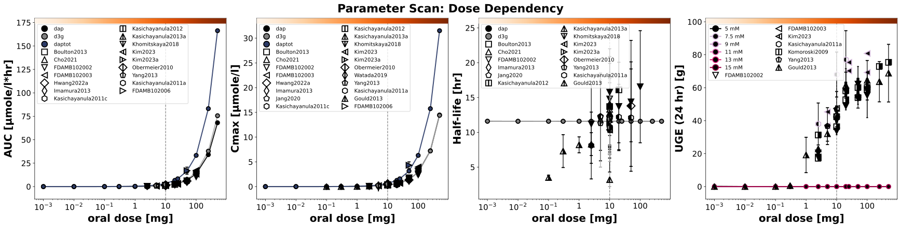
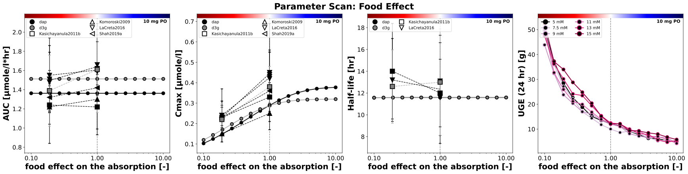
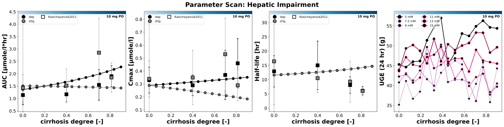
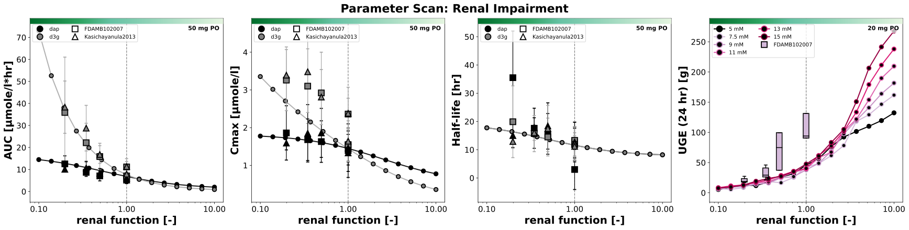

Overview
Models
| model | source |
|---|---|
| model | dapagliflozin_body_flat.xml |
Datasets
The experiment has no datasets.
Figures (4)








Code
"""Parameter scans of the dapagliflozin model.
The oral dose, the absorption (food effect), the degree of cirrhosis and the
renal function are scanned after a single oral dose of dapagliflozin, every scan
again for plasma glucose levels from 5 to 15 mM for the urinary glucose
excretion (UGE). The matplotlib figures show the pharmacokinetic parameters of
the scans at the baseline glucose and the UGE over 24 hr together with the data
of the studies in `data/parameters`.
In a run over the draws of the fitted parameters (`run_simulation
pkdb_models.models.dapagliflozin --uncertainty`) every point of a scan is
simulated for every draw on a coarser grid of output times (`times_uncertainty`);
the figures draw the median of the draws with the band of their quantiles.
"""
from collections.abc import Iterable, Mapping
from pathlib import Path
from typing import Any, ClassVar, Literal, NotRequired, TypedDict, override
import matplotlib
import matplotlib.pyplot as plt
import numpy as np
import pandas as pd
from matplotlib.axes import Axes
from matplotlib.cm import ScalarMappable
from matplotlib.colors import Colormap, LinearSegmentedColormap, LogNorm, Normalize
from matplotlib.lines import Line2D
from matplotlib.patches import Rectangle
from matplotlib.ticker import FuncFormatter, ScalarFormatter
from matplotlib.typing import FillStyleType
from mpl_toolkits.axes_grid1.inset_locator import inset_axes
from pkpdsim.scan import point_band, point_timecourse, scan_dimensions, start_values
from sbmlsim import Q
from sbmlsim.plot.serialization_matplotlib import FigureMPL
from sbmlsim.result import ScanResult
from sbmlsim.simulation import Dimension, Scan, Simulation
from pkdb_models.models.dapagliflozin import DAPAGLIFLOZIN_PATH, MODEL
from pkdb_models.models.dapagliflozin.dapagliflozin_pk import summarize
from pkdb_models.models.dapagliflozin.experiments.base_experiment import (
DapagliflozinSimulationExperiment,
)
from pkdb_models.models.dapagliflozin.models.fits import FITS
#: pharmacokinetic parameters and UGE of the studies, one file per scan
PARAMETERS_PATH = DAPAGLIFLOZIN_PATH / "data" / "parameters"
# styles of the figures of the pharmacokinetic parameters
MARKER_SIZE = 11.0 # [pt]
SCATTER_SIZE = MARKER_SIZE**1.7 # [pt^2]
EDGE_WIDTH = 1.8
LINE_WIDTH = 2.0
DPI = 300
#: markers and fill styles of the studies, in the order of the studies in the data
STUDY_MARKERS = ("s", "^", "v", "<", ">", "D", "d", "p", "h")
STUDY_FILLSTYLES: tuple[FillStyleType, ...] = (
"full",
"left",
"right",
"top",
"bottom",
)
#: pharmacokinetic parameters which are shown with the data of the studies
PK_PARAMETERS = ["auc_inf_obs", "cmax", "thalf"]
#: columns of the study data with a boxplot (median, quartiles and range)
BOXPLOT_COLUMNS = ["median", "Q1", "Q3", "Min", "Max"]
#: marker and fill style of a study
StudyStyle = tuple[str, FillStyleType]
class ScanSpec(TypedDict):
"""Definition of a single parameter scan."""
parameter: str
#: value of the reference simulation
default: float
range: np.ndarray
scale: Literal["linear", "log"]
units: str
label: str
title: str
#: name of the matplotlib colormap; the hepatic and renal scans are colored
#: like the groups of the studies
colormap: NotRequired[str]
#: oral dose of dapagliflozin [mg], `dose_dap` by default
dose_mg: NotRequired[float]
def _dose_tick_label(x: float, pos: int | None) -> str:
"""Label of a tick of the dose axis, scientific notation below 1 mg."""
if x >= 1:
return f"{int(x)}" if x == int(x) else f"{x:g}"
exp = int(np.floor(np.log10(x)))
return f"$10^{{{exp}}}$"
def _log_position(value: float, vmin: float, vmax: float) -> float:
"""Position of a value in the logarithmic range [vmin, vmax], in [0, 1]."""
return float((np.log10(value) - np.log10(vmin)) / (np.log10(vmax) - np.log10(vmin)))
class DapagliflozinParameterScan(DapagliflozinSimulationExperiment):
"""Scan the effect of parameters on dapagliflozin pharmacokinetics and pharmacodynamics."""
#: pharmacokinetic parameters of the scans at the baseline glucose by
#: simulation key, set by `figures_mpl`
pk_dfs: dict[str, pd.DataFrame]
# Dose configurations
dose_levels: ClassVar[list[float]] = [
0.001,
0.01,
0.1,
0.3,
1.0,
2.5,
5,
10,
20,
25,
50,
100,
250,
500,
]
dose_labels: ClassVar[list[str]] = [f"{d:g} mg" for d in dose_levels]
# Glucose values and colors (edge/line color) for UGE plots
glucose_values_mM: ClassVar[list[float]] = [5, 7.5, 9, 11, 13, 15]
glucose_colors: ClassVar[list[str]] = [
"black",
"#d4b9da",
"#c994c7",
"#df65b0",
"#dd1c77",
"#980043",
]
baseline_glucose_mM: float = 5 # used as healthy baseline for PK plots
# fasting plasma glucose [mM] by diabetes status of the subjects
diabetes_fpg: ClassVar[dict[str, float]] = {
"N": 5.0,
"D1": 7.5,
"D2": 7.5,
}
parameters_tsv: ClassVar[dict[str, Path]] = {
"food_scan": PARAMETERS_PATH / "parameters_food.tsv",
"hepatic_scan": PARAMETERS_PATH / "parameters_hepatic.tsv",
"renal_scan_50": PARAMETERS_PATH / "parameters_renal.tsv",
"renal_scan_20": PARAMETERS_PATH / "parameters_renal.tsv",
"dose_scan": PARAMETERS_PATH / "parameters_dose.tsv",
}
scan_class: ClassVar[dict[str, str]] = {
"dose_scan": "dose",
"food_scan": "food",
"hepatic_scan": "hepatic function",
"renal_scan_50": "renal function",
"renal_scan_20": "renal function",
}
# conditions of the study data by class to the groups of the maps
scan_mapping: ClassVar[dict[str, dict[str, str]]] = {
"dose": {label: label for label in dose_labels},
"food": {
"fasted": "fasted",
"fed": "fed",
},
"hepatic function": {
"healthy": "Control",
"mild": "Mild cirrhosis",
"moderate": "Moderate cirrhosis",
"severe": "Severe cirrhosis",
},
"renal function": {
"healthy": "Normal renal function",
"normal": "Normal renal function",
"mild": "Mild renal impairment",
"moderate": "Moderate renal impairment",
"severe": "Severe renal impairment",
},
}
# values of the scanned parameter of the groups by class; the food scan
# scans the factor of food on the absorption (`GU__FED_f_absorption`), 1
# is the fasted state, the fed state is the fitted factor (the switch
# `GU__fed` of `fasting_map` is 1 in all simulations of the scan)
condition_maps: ClassVar[dict[str, Mapping[str, float]]] = {
"food": {
"fasted": 1.0,
"fed": float(FITS.parameter("GU__FED_f_absorption")["value"]),
},
"hepatic function": DapagliflozinSimulationExperiment.cirrhosis_map,
"renal function": DapagliflozinSimulationExperiment.renal_map,
}
# Series colors for plotting (dap=black, d3g=grey, uge=black, daptot=blue)
series_fill_colors: ClassVar[dict[str, str]] = {
"dap": "black",
"d3g": "grey",
"uge": "black",
"daptot": "#2b3a67",
}
series_edge_colors: ClassVar[dict[str, str]] = {
"dap": "black",
"d3g": "black",
"uge": "black",
"daptot": "black",
}
series_line_colors: ClassVar[dict[str, str]] = {
"dap": "black",
"d3g": "darkgrey",
"uge": "black",
"daptot": "#2b3a67",
}
# error bars of the study data (dap=black, d3g=darkgrey)
series_error_colors: ClassVar[dict[str, str]] = {
"dap": "black",
"d3g": "darkgrey",
"daptot": "black",
}
#: the end of the scans [min], four days for a half-life of 12-13 hr; the
#: urinary glucose excretion is read at 24 hr
tend = 4.0 * 24 * 60
#: the output times of a run over the draws [min]: every 10 min in the
#: first day (absorption, maximum and the UGE at 24 hr), every hour after
#: it. The grid of `steps` for every draw of every point of the 30 scans
#: would need about 42 GB, this grid about 2.3 GB.
times_uncertainty: ClassVar[tuple[float, ...]] = tuple(
np.unique(
np.concatenate(
[np.linspace(0, 24 * 60, 145), np.linspace(24 * 60, tend, 73)]
)
).tolist()
)
#: the opacity of the bands of the draws of the fitted parameters
band_alpha = 0.2
dose_dap = 10
num_points = 15
scan_map: ClassVar[dict[str, ScanSpec]] = {
"dose_scan": {
"parameter": "PODOSE_dap",
"default": 10.0,
"range": np.array(dose_levels, dtype=float),
"scale": "log",
"units": "mg",
"label": "oral dose [mg]",
"colormap": "Oranges",
"title": "Parameter Scan: Dose Dependency",
},
"food_scan": {
"parameter": "GU__FED_f_absorption",
"default": 1.0,
"range": np.logspace(-1, 1, num=num_points),
"scale": "log",
"colormap": "seismic_r",
"units": "dimensionless",
"label": "food effect on the absorption [-]",
"dose_mg": 10,
"title": "Parameter Scan: Food Effect",
},
"hepatic_scan": {
"parameter": "f_cirrhosis",
"default": 0.0,
"range": np.linspace(0, 0.9, num=num_points),
"scale": "linear",
"units": "dimensionless",
"label": "cirrhosis degree [-]",
"dose_mg": 10,
"title": "Parameter Scan: Hepatic Impairment",
},
"renal_scan_50": {
"parameter": "KI__f_renal_function",
"default": 1.0,
"range": np.logspace(-1, 1, num=num_points),
"scale": "log",
"units": "dimensionless",
"label": "renal function [-]",
"dose_mg": 50, # PK overlays at 50 mg
"title": "Parameter Scan: Renal Impairment",
},
"renal_scan_20": {
"parameter": "KI__f_renal_function",
"default": 1.0,
"range": np.logspace(-1, 1, num=num_points),
"scale": "log",
"units": "dimensionless",
"label": "renal function [-]",
"dose_mg": 20, # UGE overlays at 20 mg
"title": "Parameter Scan: Renal Impairment",
},
}
@staticmethod
def _sim_key(scan_key: str, glc: float) -> str:
"""Key of the simulation of a scan at a plasma glucose [mM].
The glucose is truncated to an integer, e.g. `scan_po_dose_scan__glc7`
for 7.5 mM.
"""
return f"scan_po_{scan_key}__glc{int(glc)}"
@override
def simulations(self) -> dict[str, Scan]:
scans: dict[str, Scan] = {}
grid: dict[str, Any] = (
{} if self.uncertainty is None else {"times": self.times_uncertainty}
)
for scan_key, scan_data in self.scan_map.items():
base_dose = scan_data.get("dose_mg", self.dose_dap)
for glc in self.glucose_values_mM:
scans[self._sim_key(scan_key, glc)] = Scan(
simulation=Simulation(
time_unit="min",
end=self.tend,
**grid,
preinit_changes={
**self.default_changes(),
# the dose scan scans the dose itself
**(
{}
if scan_data["parameter"] == "PODOSE_dap"
else {"PODOSE_dap": Q(base_dose, "mg")}
),
"[KI__fpg]": Q(glc, "mM"),
# the food scan scans the effect of food on the
# absorption rate in the fed state
**(
{"GU__fed": Q(1, "dimensionless")}
if scan_data["parameter"] == "GU__FED_f_absorption"
else {}
),
},
),
dimensions=[
Dimension(
"dim_scan",
values={
scan_data["parameter"]: Q(
scan_data["range"], scan_data["units"]
)
},
),
],
)
return scans
def _across(self) -> str | None:
"""Get the dimension of the draws of the fitted parameters, `None` without."""
return None if self.uncertainty is None else self.uncertainty.id
def _band(
self, res: ScanResult, sid: str, k: int
) -> tuple[np.ndarray, np.ndarray, np.ndarray, np.ndarray]:
"""Get the timecourse of a point of a scan with the band of its draws.
Args:
res: result of the scan.
sid: the variable.
k: the position of the point along the dimension of the scan.
Returns:
The time points, the lower quantile, the median and the upper
quantile of the draws in a run over them, the values three times
without draws.
"""
across = self._across()
(scandim,) = scan_dimensions(res, across)
run = self.uncertainty
if run is None:
time, values = point_timecourse(res, sid, **{scandim: k})
return time, values, values, values
return point_band(
res, sid, across=run.id, quantiles=run.quantiles, **{scandim: k}
)
def _get_glucose_color(self, diabetes_status: str) -> str:
"""Get the appropriate glucose color based on diabetes status."""
glucose_mM = self.diabetes_fpg.get(diabetes_status, 5.0)
# Find the index of this glucose value in glucose_values_mM
try:
idx = self.glucose_values_mM.index(glucose_mM)
return self.glucose_colors[idx]
except (ValueError, IndexError):
return "black" # Default to black if not found
@staticmethod
def _draw_boxplot(
ax: Axes,
x: float,
stats: dict[str, float],
facecolor: str,
edgecolor: str = "black",
width: float = 0.05,
linewidth: float = 1.5,
zorder: int = 4,
) -> None:
"""Draw a single boxplot at position x with given statistics.
Args:
ax: axes to draw in.
x: position of the box on the x-axis.
stats: `median`, quartiles `Q1` and `Q3` and range `Min` and `Max`.
facecolor: color of the box.
edgecolor: color of the edge of the box and of the whiskers.
width: width of the box.
linewidth: line width of the box and the whiskers.
zorder: zorder of the box and the whiskers, the median is on top.
"""
median = stats["median"]
q1 = stats["Q1"]
q3 = stats["Q3"]
min_val = stats["Min"]
max_val = stats["Max"]
# Draw the box (Q1 to Q3)
box = Rectangle(
(x - width / 2, q1),
width,
q3 - q1,
facecolor=facecolor,
edgecolor=edgecolor,
linewidth=linewidth,
zorder=zorder,
)
ax.add_patch(box)
# Draw median line
ax.plot(
[x - width / 2, x + width / 2],
[median, median],
color="black",
linewidth=linewidth,
zorder=zorder + 1,
)
# Draw whiskers (vertical lines from box to min/max)
# Lower whisker: from Q1 to Min
ax.plot(
[x, x], [q1, min_val], color=edgecolor, linewidth=linewidth, zorder=zorder
)
# Upper whisker: from Q3 to Max
ax.plot(
[x, x], [q3, max_val], color=edgecolor, linewidth=linewidth, zorder=zorder
)
# Draw whisker caps
cap_width = width * 0.5
ax.plot(
[x - cap_width / 2, x + cap_width / 2],
[min_val, min_val],
color=edgecolor,
linewidth=linewidth,
zorder=zorder,
)
ax.plot(
[x - cap_width / 2, x + cap_width / 2],
[max_val, max_val],
color=edgecolor,
linewidth=linewidth,
zorder=zorder,
)
@staticmethod
def _add_dose_note(ax: Axes, text: str) -> None:
"""Annotate the dose of a scan in the upper right corner."""
ax.text(
0.98,
0.96,
text,
transform=ax.transAxes,
ha="right",
va="top",
fontsize=11,
fontweight="bold",
bbox={
"boxstyle": "round,pad=0.25",
"facecolor": "white",
"edgecolor": "none",
"alpha": 0.7,
},
zorder=10,
)
@staticmethod
def _load_and_clean_study_data(tsv_path: Path) -> pd.DataFrame:
"""Load and preprocess study data from TSV file."""
df_raw = pd.read_csv(tsv_path, sep="\t", comment="#")
# Base columns that should always be present
base_cols = [
"study",
"class",
"condition",
"parameter",
"dose",
"substance",
"diabetes",
]
# Optional columns for mean/SD data
mean_sd_cols = ["mean_unit_conv", "sd_unit_conv"]
# Determine which columns to load
cols_to_load = base_cols.copy()
for col in mean_sd_cols:
if col in df_raw.columns:
cols_to_load.append(col)
for col in BOXPLOT_COLUMNS:
if col in df_raw.columns:
cols_to_load.append(col)
df = df_raw[cols_to_load].copy()
# Clean string columns
df["parameter"] = df["parameter"].str.strip()
df["substance"] = df["substance"].str.strip().str.lower()
df["class"] = df["class"].str.strip().str.lower()
df["condition"] = df["condition"].str.strip()
df["diabetes"] = df["diabetes"].str.strip()
df["dose"] = pd.to_numeric(df["dose"], errors="coerce")
# Convert boxplot columns to numeric if present
for col in BOXPLOT_COLUMNS:
if col in df.columns:
df[col] = pd.to_numeric(df[col], errors="coerce")
return df
@override
def figures_mpl(self) -> dict[str, FigureMPL]:
# pharmacokinetic parameters of the scans at the baseline glucose
self.pk_dfs = self.calculate_dapagliflozin_pk(
scans=[
self._sim_key(scan_key, self.baseline_glucose_mM)
for scan_key in self.scan_map
]
)
# the timecourses of the scans (`figures_mpl_timecourses`) are not plotted
return {
**self.figures_mpl_pharmacokinetics(),
}
def _renal_colormap(self) -> LinearSegmentedColormap:
"""Colormap of the renal function, colored like the groups of the studies."""
vmin, vmax = 0.1, 10.0
return LinearSegmentedColormap.from_list(
"renal_greens",
[
(
_log_position(0.1, vmin, vmax),
self.renal_colors["Severe renal impairment"],
),
(
_log_position(0.32, vmin, vmax),
self.renal_colors["Moderate renal impairment"],
),
(
_log_position(0.69, vmin, vmax),
self.renal_colors["Mild renal impairment"],
),
(_log_position(10.0, vmin, vmax), "#e5f5e0"),
],
)
def _colormap(self, scan_key: str) -> tuple[Colormap, Normalize, float, float]:
"""Colormap of a scan with its normalization and the range of the colors.
The hepatic and renal scans are colored like the groups of the studies,
the other scans with their colormap over the scanned range.
Returns:
The colormap, the normalization and the minimum and maximum of the
colors.
"""
scan_data = self.scan_map[scan_key]
if scan_key == "hepatic_scan":
cmap = LinearSegmentedColormap.from_list(
"cirrhosis_blues",
[
self.cirrhosis_colors["Mild cirrhosis"],
self.cirrhosis_colors["Moderate cirrhosis"],
self.cirrhosis_colors["Severe cirrhosis"],
],
)
return cmap, Normalize(vmin=0.0, vmax=0.9, clip=False), 0.0, 0.9
if scan_key in ["renal_scan_50", "renal_scan_20"]:
vmin, vmax = 0.1, 10.0
norm = LogNorm(vmin=vmin, vmax=vmax, clip=False)
return self._renal_colormap(), norm, vmin, vmax
rmin, rmax = float(scan_data["range"][0]), float(scan_data["range"][-1])
cmap = matplotlib.colormaps[scan_data.get("colormap", "viridis")]
if scan_data["scale"] == "linear":
return cmap, Normalize(vmin=rmin, vmax=rmax, clip=False), rmin, rmax
return cmap, LogNorm(vmin=rmin, vmax=rmax, clip=False), rmin, rmax
def figures_mpl_timecourses(self) -> dict[str, FigureMPL]:
"""Generate timecourse plots for each parameter scan at the baseline glucose."""
return {
f"timecourse__{scan_key}": self._plot_timecourse_scan(scan_key)
for scan_key in self.scan_map
}
def _plot_timecourse_scan(self, scan_key: str) -> FigureMPL:
"""Timecourses of dapagliflozin and its glucuronide of a scan."""
sids = [
"[Cve_dap]",
"[Cve_d3g]",
"Aurine_dap",
"Aurine_d3g",
"Afeces_dap",
]
scan_data = self.scan_map[scan_key]
cmap, norm, _, _ = self._colormap(scan_key)
f, axes = plt.subplots(
nrows=1,
ncols=len(sids),
figsize=(6 * len(sids), 6),
dpi=300,
layout="constrained",
)
# Add figure title
f.suptitle(scan_data["title"], fontsize=18, fontweight="bold")
res = self.results[f"task_{self._sim_key(scan_key, self.baseline_glucose_mM)}"]
units = res.units
par_vec = self._scan_values(res, scan_data["parameter"])
# Plot timecourses for each output variable
for ax, sid in zip(axes, sids, strict=True):
t_vec_default = c_vec_default = None
for k_par, par in enumerate(par_vec):
time, _, values, _ = self._band(res, sid, k_par)
t_vec = Q(time, units["time"]).to(self.units["time"])
c_vec = Q(values, units[sid]).to(self.units[sid])
if np.isclose(scan_data["default"], par):
color = "black"
t_vec_default, c_vec_default = t_vec, c_vec
else:
color = cmap(norm(par))
ax.plot(t_vec.magnitude, c_vec.magnitude, color=color, linewidth=2.0)
# Redraw default condition on top in black
if t_vec_default is not None and c_vec_default is not None:
ax.plot(
t_vec_default.magnitude,
c_vec_default.magnitude,
color="black",
linewidth=2.0,
)
ax.set_xlabel(
f"{self.label_time} [{self.units['time']}]", fontdict=self.font
)
ax.tick_params(axis="x", labelsize=self.tick_font_size)
ax.tick_params(axis="y", labelsize=self.tick_font_size)
ax.set_ylabel(f"{self.labels[sid]} [{self.units[sid]}]", fontdict=self.font)
if sid in ["[Cve_dap]", "[Cve_d3g]"]:
if scan_key in ["renal_scan_50", "renal_scan_20"]:
ax.set_xlim(0, 35)
else:
ax.set_xlim(0, 21)
# Add colorbar showing parameter range
cb_ax = f.add_axes(rect=(0.08, 0.85, 0.1, 0.08))
cb_ax.set_in_layout(True)
cbar = f.colorbar(
ScalarMappable(norm=norm, cmap=cmap),
cax=cb_ax,
orientation="horizontal",
)
# the gradient as vector cells: matplotlib rasterizes it into an
# embedded image, which some SVG viewers do not show; the edges of
# the cells in their color close the seams between them
if cbar.solids is not None:
cbar.solids.set_rasterized(False)
cbar.solids.set_edgecolor("face")
if scan_key == "hepatic_scan":
ticks = [0.0, 0.9]
elif scan_key in ["renal_scan_50", "renal_scan_20"]:
ticks = [0.1, 10.0]
else:
ticks = [float(scan_data["range"][0]), float(scan_data["range"][-1])]
if scan_data["default"] not in ticks:
ticks = sorted([*ticks, scan_data["default"]])
cbar.set_ticks(ticks)
# the weight normal: DejaVu Sans has no medium weight, matplotlib warns
cbar.set_ticklabels([f"{tick:g}" for tick in ticks], size=15, weight="normal")
cbar.ax.axvline(x=scan_data["default"], color="black", linewidth=2)
cbar.ax.set_xlabel(scan_data["label"], size=15, weight="bold")
return f
def figures_mpl_pharmacokinetics(self) -> dict[str, FigureMPL]:
"""Generate pharmacokinetic parameter plots with study data overlays."""
figures: dict[str, FigureMPL] = {}
for scan_key in ["dose_scan", "food_scan", "hepatic_scan"]:
figures[f"pk_{scan_key}"] = self._plot_pk_scan(scan_key)
# combined renal figure: PK from the 50 mg scan, UGE from the 20 mg scan
figures["pk_renal_scan"] = self._plot_pk_renal_scan()
return figures
@staticmethod
def _substances(scan_key: str, pk_key: str) -> list[str]:
"""Substances of a pharmacokinetic parameter of a scan.
Total dapagliflozin is only shown for AUC and Cmax of the dose scan.
"""
substances = ["dap", "d3g"]
if scan_key == "dose_scan" and pk_key in ["auc_inf_obs", "cmax"]:
substances.append("daptot")
return substances
def _scan_values(self, res: ScanResult, parameter_id: str) -> np.ndarray:
"""Values of the scanned parameter of a scan (of the first draw)."""
values = start_values(res, parameter_id)
across = self._across()
if across is not None:
values = values.isel({across: 0})
return np.asarray(values.values, dtype=float)
def _index_24h(self, res: ScanResult) -> int:
"""Index of the time point of the UGE (24 hr) of a scan."""
time, *_ = self._band(res, "KI__UGE", 0)
t_vec = Q(time, res.units["time"]).to(self.units["time"]).magnitude
return int(np.argmin(np.abs(t_vec - Q(24, "hr").to(self.units["time"]).m)))
@staticmethod
def _add_scan_strip(
ax: Axes,
cmap: Colormap,
norm: Normalize,
vmin: float,
vmax: float,
scale: str,
height_frac: float = 0.03,
) -> None:
"""Draw a thin horizontal gradient strip at top of axes showing parameter range."""
ax.margins(y=0.08)
if isinstance(norm, LogNorm) or scale == "log":
xs = np.geomspace(max(vmin, 1e-12), vmax, 256)
else:
xs = np.linspace(vmin, vmax, 256)
strip_ax = inset_axes(
ax,
width="100%",
height=f"{height_frac * 100:.2f}%",
loc="upper center",
borderpad=0,
)
strip_ax.imshow(
xs[np.newaxis, :],
aspect="auto",
cmap=cmap,
norm=norm,
origin="lower",
extent=(0, 1, 0, 1),
)
strip_ax.set_axis_off()
strip_ax.set_zorder(ax.get_zorder() + 1)
def _set_labels(self, ax: Axes, xlabel: str, ylabel: str) -> None:
"""Set the labels and the size of the tick labels of a panel."""
ax.tick_params(axis="x", labelsize=self.tick_font_size)
ax.tick_params(axis="y", labelsize=self.tick_font_size)
ax.set_xlabel(xlabel, fontdict=self.scan_font)
ax.set_ylabel(ylabel, fontdict=self.scan_font)
@staticmethod
def _format_scan_xaxis(ax: Axes, scan_key: str, scale: str) -> None:
"""Logarithmic x-axis of a scan with plain numbers, the doses below 1 mg as powers."""
if scale != "log":
return
ax.set_xscale("log")
if scan_key == "dose_scan":
# scientific notation for <1
ax.xaxis.set_major_formatter(FuncFormatter(_dose_tick_label))
else:
ax.xaxis.set_major_formatter(ScalarFormatter())
ax.ticklabel_format(style="plain", axis="x")
def _plot_pk_simulation(
self,
ax: Axes,
x_vals: np.ndarray,
df: pd.DataFrame,
pk_key: str,
substance: str,
) -> None:
"""Plot a pharmacokinetic parameter of a substance over the scanned values.
In a run over the draws the median of the draws with the band of their
quantiles.
"""
df_sub = df[df.substance == substance]
if df_sub.empty:
return
unit = df_sub[f"{pk_key}_unit"].to_numpy()[0]
run = self.uncertainty
if run is None:
y = Q(df_sub[pk_key].to_numpy(dtype=float), unit).to(self.pk_units[pk_key])
y = y.magnitude
else:
summary = summarize(df_sub, pk_key, run.quantiles)
y, y_lower, y_upper = (
Q(summary[column].to_numpy(), unit).to(self.pk_units[pk_key]).magnitude
for column in ["median", "lower", "upper"]
)
ax.fill_between(
x_vals,
y_lower,
y_upper,
color=self.series_line_colors[substance],
alpha=self.band_alpha,
linewidth=0,
zorder=1,
)
ax.plot(
x_vals,
y,
linestyle="-",
linewidth=LINE_WIDTH,
color=self.series_line_colors[substance],
alpha=0.9,
zorder=2,
)
ax.scatter(
x_vals,
y,
s=SCATTER_SIZE,
facecolors=self.series_fill_colors[substance],
edgecolors=self.series_edge_colors[substance],
linewidths=EDGE_WIDTH,
zorder=3,
)
def _plot_uge_simulations(
self, ax: Axes, scan_key: str, x_vals: np.ndarray, idx_24h: int
) -> None:
"""Plot the UGE (24 hr) over the scanned values for every glucose level.
In a run over the draws the median of the draws with the band of their
quantiles.
"""
uge_sid = "KI__UGE"
for glc, color in zip(self.glucose_values_mM, self.glucose_colors, strict=True):
res = self.results[f"task_{self._sim_key(scan_key, glc)}"]
uge_unit = res.units[uge_sid]
# the lower quantile, the median and the upper quantile [g]
bands = np.array(
[
[
Q(v[idx_24h], uge_unit).to("g").magnitude
for v in self._band(res, uge_sid, i)[1:]
]
for i in range(len(x_vals))
]
)
uge_24h_g = bands[:, 1]
if self.uncertainty is not None:
ax.fill_between(
x_vals,
bands[:, 0],
bands[:, 2],
color=color,
alpha=self.band_alpha,
linewidth=0,
zorder=1,
)
ax.plot(
x_vals,
uge_24h_g,
linestyle="-",
linewidth=LINE_WIDTH,
color=color,
zorder=2,
)
ax.scatter(
x_vals,
uge_24h_g,
s=SCATTER_SIZE,
facecolors=self.series_fill_colors["uge"],
edgecolors=color,
linewidths=EDGE_WIDTH,
zorder=3,
)
@staticmethod
def _study_styles(studies: Iterable[str]) -> dict[str, StudyStyle]:
"""Unique marker and fill style of every study, in the order of the studies."""
n_markers = len(STUDY_MARKERS)
return {
study: (
STUDY_MARKERS[i % n_markers],
STUDY_FILLSTYLES[(i // n_markers) % len(STUDY_FILLSTYLES)],
)
for i, study in enumerate(studies)
}
def _x_position(self, row: pd.Series, cls: str) -> float:
"""Position of a row of the study data on the x-axis.
The dose for the dose scan, otherwise the value of the scanned parameter
of the group of the condition.
"""
if cls == "dose":
return float(row["dose"])
condition = self.scan_mapping[cls][row["condition"]]
return float(self.condition_maps[cls][condition])
@staticmethod
def _plot_study_value(
ax: Axes,
x: float,
y: float,
yerr: float,
style: StudyStyle,
face: str,
edge: str,
err_color: str,
) -> None:
"""Plot a mean of the study data, with the SD as error bar if there is one."""
marker, fillstyle = style
if pd.notna(yerr) and float(yerr) != 0.0:
eb = ax.errorbar(
[x],
[y],
yerr=[[yerr], [yerr]],
fmt=marker,
markersize=MARKER_SIZE,
fillstyle=fillstyle,
mfc=face,
mec=edge,
mew=EDGE_WIDTH,
lw=1.2,
ecolor=err_color,
capsize=3,
zorder=4,
)
# the data line of the error bar, i.e., the marker
eb.lines[0].set_markerfacecoloralt("none")
else:
(pt,) = ax.plot(
[x],
[y],
linestyle="",
marker=marker,
markersize=MARKER_SIZE,
fillstyle=fillstyle,
mfc=face,
mec=edge,
mew=EDGE_WIDTH,
zorder=4,
)
pt.set_markerfacecoloralt("none")
@staticmethod
def _study_handle(study: str, style: StudyStyle) -> Line2D:
"""Legend handle of a study, its marker without fill."""
marker, fillstyle = style
return Line2D(
[0],
[0],
marker=marker,
linestyle="",
fillstyle=fillstyle,
markerfacecolor="none",
markerfacecoloralt="none",
markeredgecolor="black",
markeredgewidth=EDGE_WIDTH,
markersize=MARKER_SIZE,
label=study,
)
@staticmethod
def _box_handle(study: str, color: str) -> Line2D:
"""Legend handle of a study with boxplots, a square of the color of the box."""
return Line2D(
[0],
[0],
marker="s",
linestyle="",
markerfacecolor=color,
markeredgecolor="black",
markeredgewidth=EDGE_WIDTH,
markersize=MARKER_SIZE,
label=study,
)
def _series_handle(self, substance: str) -> Line2D:
"""Legend handle of the simulation of a substance."""
return Line2D(
[0],
[0],
marker="o",
linestyle="",
markerfacecolor=self.series_fill_colors[substance],
markeredgecolor=self.series_edge_colors[substance],
markeredgewidth=EDGE_WIDTH,
markersize=MARKER_SIZE,
label=substance,
)
def _glucose_handles(self) -> list[Line2D]:
"""Legend handles of the UGE simulations of the glucose levels."""
return [
Line2D(
[0],
[0],
marker="o",
linestyle="-",
markerfacecolor="black",
markeredgecolor=color,
markeredgewidth=EDGE_WIDTH,
linewidth=LINE_WIDTH,
color=color,
markersize=MARKER_SIZE,
label=f"{glc} mM",
)
for glc, color in zip(
self.glucose_values_mM, self.glucose_colors, strict=True
)
]
@staticmethod
def _add_legend(ax: Axes, handles: list[Line2D]) -> None:
"""Add the legend of a panel in the upper left corner."""
if handles:
ax.legend(
handles=handles,
loc="upper left",
frameon=True,
fontsize=10,
ncol=2,
bbox_to_anchor=(0.0, 0.98),
bbox_transform=ax.transAxes,
)
def _plot_pk_study_data(
self,
ax: Axes,
df: pd.DataFrame,
cls: str,
study_styles: dict[str, StudyStyle],
handles: dict[str, Line2D],
) -> None:
"""Plot the means of a pharmacokinetic parameter of the studies.
Args:
ax: axes of the parameter.
df: rows of the study data, plotted in their order.
cls: class of the scan in the study data.
study_styles: marker and fill style of the studies.
handles: legend handles of the studies, a handle is added for every
new study.
"""
for _, row in df.iterrows():
substance = row["substance"]
study = row["study"]
self._plot_study_value(
ax,
x=self._x_position(row, cls),
y=float(row["mean_unit_conv"]),
yerr=row["sd_unit_conv"],
style=study_styles[study],
face=self.series_fill_colors[substance],
edge=self.series_edge_colors[substance],
err_color=self.series_error_colors[substance],
)
if study not in handles:
handles[study] = self._study_handle(study, study_styles[study])
def _plot_uge_study_data(
self,
ax: Axes,
df: pd.DataFrame,
cls: str,
study_styles: dict[str, StudyStyle],
scale: str,
vrange: tuple[float, float],
mean_with_box: bool,
) -> dict[str, Line2D]:
"""Plot the UGE of the studies, as boxplot and as mean (SD).
The box and the edge of the mean have the color of the glucose level of
the subjects (diabetes status).
Args:
ax: axes of the UGE.
df: rows of the study data, plotted in their order.
cls: class of the scan in the study data.
study_styles: marker and fill style of the studies.
scale: scale of the x-axis, the width of a box is relative to its
position on a logarithmic axis and to the range otherwise.
vrange: range of the x-axis for the width of a box on a linear axis.
mean_with_box: plot the mean of a row with a boxplot as well.
Returns:
The legend handles of the studies.
"""
handles: dict[str, Line2D] = {}
# Check for boxplot data or mean/SD data
has_boxplot = all(col in df.columns for col in BOXPLOT_COLUMNS)
has_mean_sd = all(
col in df.columns for col in ["mean_unit_conv", "sd_unit_conv"]
)
for _, row in df.iterrows():
x = self._x_position(row, cls)
study = row["study"]
# Get edge color based on diabetes status
glucose_color = self._get_glucose_color(row.get("diabetes", "N"))
# Plot boxplot if data is available
has_box = has_boxplot and pd.notna(row.get("median"))
if has_box:
stats = {col: float(row[col]) for col in BOXPLOT_COLUMNS}
if scale == "log":
box_width = 0.15 * x # 15% of x for log scale
else:
box_width = (vrange[1] - vrange[0]) * 0.02
self._draw_boxplot(
ax,
x,
stats,
facecolor=glucose_color,
edgecolor="black",
width=box_width,
linewidth=1.5,
zorder=4,
)
if study not in handles:
handles[study] = self._box_handle(study, glucose_color)
# Plot mean if data is available
if (
(mean_with_box or not has_box)
and has_mean_sd
and pd.notna(row.get("mean_unit_conv"))
):
self._plot_study_value(
ax,
x=x,
y=float(row["mean_unit_conv"]),
yerr=row.get("sd_unit_conv"),
style=study_styles[study],
face=self.series_fill_colors["uge"],
edge=glucose_color,
err_color="black",
)
if study not in handles:
handles[study] = self._study_handle(study, study_styles[study])
return handles
def _plot_food_connectors(self, axes: dict[str, Axes], df_st: pd.DataFrame) -> None:
"""Connect the fasted and fed means of a study, dose and substance."""
dfg = df_st[df_st["class"] == "food"].copy()
if dfg.empty:
return
dfg["cond_canon"] = dfg["condition"].map(self.scan_mapping["food"])
x_fasted = float(self.condition_maps["food"]["fasted"])
x_fed = float(self.condition_maps["food"]["fed"])
for pk_param in PK_PARAMETERS:
dpk = dfg[dfg["parameter"] == pk_param].copy()
if dpk.empty:
continue
dpk_agg = (
dpk.groupby(
["study", "dose", "substance", "parameter", "cond_canon"],
dropna=False,
)
.agg(mean_y=("mean_unit_conv", "mean"))
.reset_index()
)
# pivot to get fasted/fed side by side
piv = dpk_agg.pivot_table(
index=["study", "dose", "substance", "parameter"],
columns="cond_canon",
values="mean_y",
aggfunc="mean",
).reset_index()
for _, r in piv.iterrows():
y_fasted = r["fasted"] if "fasted" in piv.columns else np.nan
y_fed = r["fed"] if "fed" in piv.columns else np.nan
if pd.isna(y_fasted) or pd.isna(y_fed):
continue
conn_color = "black" if r["substance"] == "dap" else "darkgrey"
axes[pk_param].plot(
[x_fasted, x_fed],
[float(y_fasted), float(y_fed)],
linestyle="--",
linewidth=1.2,
color=conn_color,
zorder=3.5,
)
def _plot_pk_scan(self, scan_key: str) -> FigureMPL:
"""Pharmacokinetic parameters and UGE of a scan with the data of the studies."""
scan_data = self.scan_map[scan_key]
cmap, norm, vmin_strip, vmax_strip = self._colormap(scan_key)
metrics = [*PK_PARAMETERS, "UGE"]
f, axes = plt.subplots(
nrows=1,
ncols=len(metrics),
figsize=(6 * len(metrics), 6),
dpi=DPI,
layout="constrained",
)
ax_by_metric: dict[str, Axes] = dict(zip(metrics, axes.flatten(), strict=True))
# Add figure title
f.suptitle(scan_data["title"], fontsize=22, fontweight="bold")
sim_key_base = self._sim_key(scan_key, self.baseline_glucose_mM)
res_base = self.results[f"task_{sim_key_base}"]
df_all = self.pk_dfs[sim_key_base]
x_vals = self._scan_values(res_base, scan_data["parameter"])
idx_24h = self._index_24h(res_base)
# Plot simulation results
for pk_key, ax in ax_by_metric.items():
ax.axvline(
x=scan_data["default"],
color="grey",
linestyle="--",
linewidth=1.2,
zorder=1,
)
if pk_key != "UGE":
# PK metrics (AUC, Cmax, half-life)
for substance in self._substances(scan_key, pk_key):
self._plot_pk_simulation(ax, x_vals, df_all, pk_key, substance)
ylabel = f"{self.pk_labels[pk_key]} [{self.pk_units[pk_key]}]"
else:
# UGE (24 h) with multiple glucose concentrations
self._plot_uge_simulations(ax, scan_key, x_vals, idx_24h)
ylabel = "UGE (24 hr) [g]"
self._set_labels(ax, scan_data["label"], ylabel)
self._format_scan_xaxis(ax, scan_key, scan_data["scale"])
self._add_scan_strip(
ax,
cmap=cmap,
norm=norm,
vmin=vmin_strip,
vmax=vmax_strip,
scale=scan_data["scale"],
)
if scan_key in ("food_scan", "hepatic_scan"):
self._add_dose_note(ax, "10 mg PO")
# Load and overlay study data
df_st = self._load_and_clean_study_data(self.parameters_tsv[scan_key])
cls = self.scan_class[scan_key]
study_styles = self._study_styles(pd.unique(df_st["study"]))
# PK metrics of the studies, substance after substance
study_handles: dict[str, dict[str, Line2D]] = {pk: {} for pk in PK_PARAMETERS}
for pk_param in PK_PARAMETERS:
for substance in self._substances(scan_key, pk_param):
dfx = df_st[
(df_st["parameter"] == pk_param) & (df_st["substance"] == substance)
]
self._plot_pk_study_data(
ax_by_metric[pk_param],
dfx,
cls,
study_styles,
study_handles[pk_param],
)
if scan_key == "food_scan":
self._plot_food_connectors(ax_by_metric, df_st)
for pk_param in PK_PARAMETERS:
series_handles = [
self._series_handle(substance)
for substance in self._substances(scan_key, pk_param)
]
self._add_legend(
ax_by_metric[pk_param],
[*series_handles, *study_handles[pk_param].values()],
)
# UGE of the studies
ax_uge = ax_by_metric["UGE"]
uge_handles = self._plot_uge_study_data(
ax_uge,
df_st[df_st["parameter"] == "UGE"],
cls,
study_styles,
scale=scan_data["scale"],
vrange=(vmin_strip, vmax_strip),
mean_with_box=True,
)
self._add_legend(ax_uge, [*self._glucose_handles(), *uge_handles.values()])
return f
def _plot_pk_renal_scan(self) -> FigureMPL:
"""Pharmacokinetic parameters (50 mg) and UGE (20 mg) of the renal scans."""
scan50 = self.scan_map["renal_scan_50"]
scan20 = self.scan_map["renal_scan_20"]
cmap, norm, vmin, vmax = self._colormap("renal_scan_50")
f, axes = plt.subplots(
nrows=1, ncols=4, figsize=(24, 6), dpi=DPI, layout="constrained"
)
ax_auc, ax_cmax, ax_thalf, ax_uge = axes
pk_axes: dict[str, Axes] = {
"auc_inf_obs": ax_auc,
"cmax": ax_cmax,
"thalf": ax_thalf,
}
# Add figure title
f.suptitle("Parameter Scan: Renal Impairment", fontsize=22, fontweight="bold")
sim50 = self._sim_key("renal_scan_50", self.baseline_glucose_mM)
df50 = self.pk_dfs[sim50]
x_vals50 = self._scan_values(self.results[f"task_{sim50}"], scan50["parameter"])
# Add default reference lines
for ax in pk_axes.values():
ax.axvline(
x=scan50["default"],
color="grey",
linestyle="--",
linewidth=1.2,
zorder=1,
)
# Plot PK simulation results from 50 mg scan
for pk_key, ax in pk_axes.items():
for substance in ["dap", "d3g"]:
self._plot_pk_simulation(ax, x_vals50, df50, pk_key, substance)
self._set_labels(
ax,
scan50["label"],
f"{self.pk_labels[pk_key]} [{self.pk_units[pk_key]}]",
)
self._format_scan_xaxis(ax, "renal_scan_50", "log")
self._add_scan_strip(
ax, cmap=cmap, norm=norm, vmin=vmin, vmax=vmax, scale="log"
)
self._add_dose_note(ax, "50 mg PO")
# Plot UGE simulation results from 20 mg scan
res20_base = self.results[
f"task_{self._sim_key('renal_scan_20', self.baseline_glucose_mM)}"
]
idx_24h_20 = self._index_24h(res20_base)
x_vals20 = self._scan_values(res20_base, scan20["parameter"])
ax_uge.axvline(
x=scan20["default"],
color="grey",
linestyle="--",
linewidth=1.2,
zorder=1,
)
self._plot_uge_simulations(ax_uge, "renal_scan_20", x_vals20, idx_24h_20)
self._set_labels(ax_uge, scan20["label"], "UGE (24 hr) [g]")
self._format_scan_xaxis(ax_uge, "renal_scan_20", "log")
self._add_scan_strip(
ax_uge, cmap=cmap, norm=norm, vmin=vmin, vmax=vmax, scale="log"
)
self._add_dose_note(ax_uge, "20 mg PO")
# Load renal study data
df_st = self._load_and_clean_study_data(self.parameters_tsv["renal_scan_50"])
cls = "renal function"
# Overlay PK study data (50 mg), in the order of the rows
df_pk50 = df_st[
(df_st["class"] == cls)
& (df_st["dose"] == 50)
& (df_st["parameter"].isin(PK_PARAMETERS))
].copy()
study_styles50 = self._study_styles(pd.unique(df_pk50["study"]))
for pk_key, ax in pk_axes.items():
study_handles: dict[str, Line2D] = {}
self._plot_pk_study_data(
ax,
df_pk50[df_pk50["parameter"] == pk_key],
cls,
study_styles50,
study_handles,
)
series_handles = [self._series_handle("dap"), self._series_handle("d3g")]
self._add_legend(ax, [*series_handles, *study_handles.values()])
# Overlay UGE study data (20 mg)
df_uge20 = df_st[
(df_st["class"] == cls)
& (df_st["dose"] == 20)
& (df_st["parameter"] == "UGE")
].copy()
uge_handles = self._plot_uge_study_data(
ax_uge,
df_uge20,
cls,
self._study_styles(pd.unique(df_uge20["study"])),
scale="log",
vrange=(vmin, vmax),
mean_with_box=False,
)
self._add_legend(ax_uge, [*self._glucose_handles(), *uge_handles.values()])
return f
if __name__ == "__main__":
MODEL.run_experiments(
DapagliflozinParameterScan, output_dir=DapagliflozinParameterScan.__name__
)